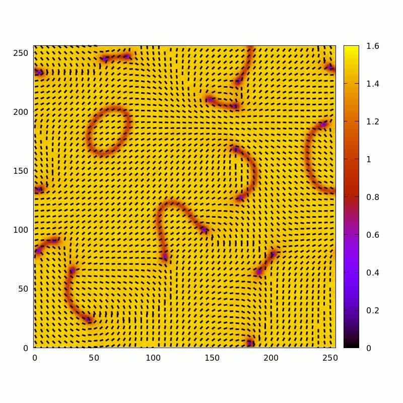

Active matter
Phases and phase transitions in inhomogeneous active systems.
Active systems · Phase transitions
Active matter & biophysics
Postdoctoral Research Fellow
Mechanobiology Institute
National University of Singapore
I study self-organization and collective behavior in complex systems, exploring the physics of active matter and biophysics.
01 / Research
My research centers on active matter and biophysics, with an interest in how interactions give rise to self-organization in complex systems.
Phases and phase transitions in inhomogeneous active systems.
Coarse-grained hydrodynamic descriptions of collective dynamics.
Microscopic models and reinforcement learning methods for active systems.
Publications & scholarly profiles
Explore my published research.

Research in motion
Explore a research movie and figures from my work on active systems.
Watch & explore02 / Background
2025 — Present
Postdoctoral Research Fellow
Mechanobiology Institute
2019 — 2024
Ph.D. in Physics
Active matter
2015 — 2017
M.Sc. in Physics
Contact
Mechanobiology Institute
National University of Singapore